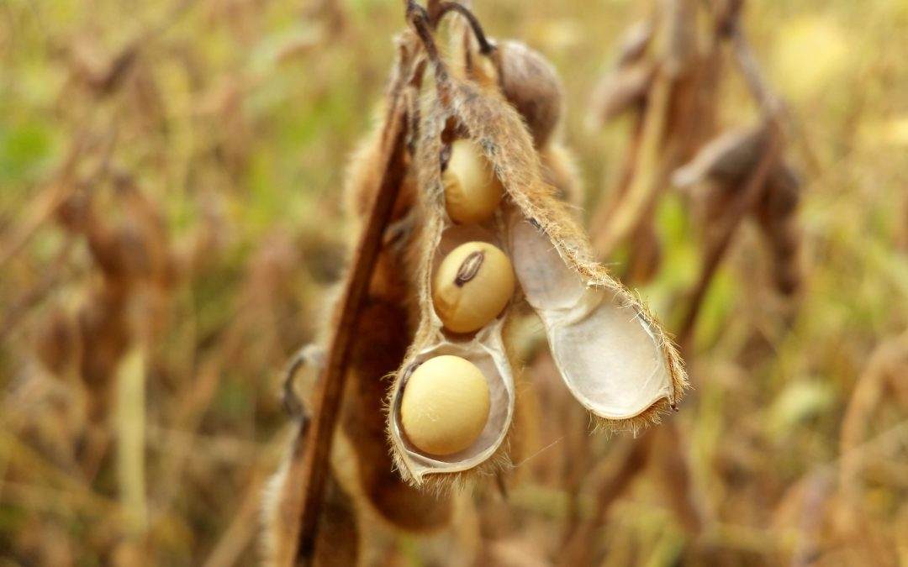

Soja
A soja é uma leguminosa pertence á família das Fabaceae, conhecida cientificamente como Glycine max. Originaria da Ásia, é amplamente cultivada em diversas partes do mundo devido ao seu valor nutricional e versatilidade. A soja é uma fonte rica de proteína vegetal.
Além de sua importancia na alimentação, a soja também é utilizada na indústria para a produção de óleo de soja, biodisel, plasticos, tintas, entre outros produtos.